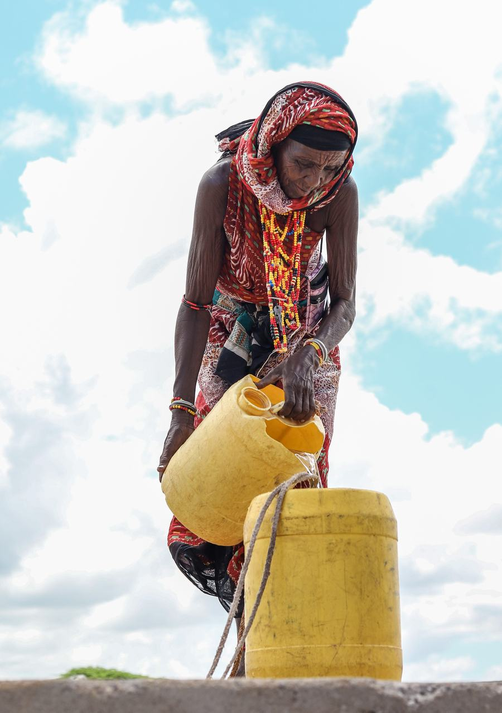
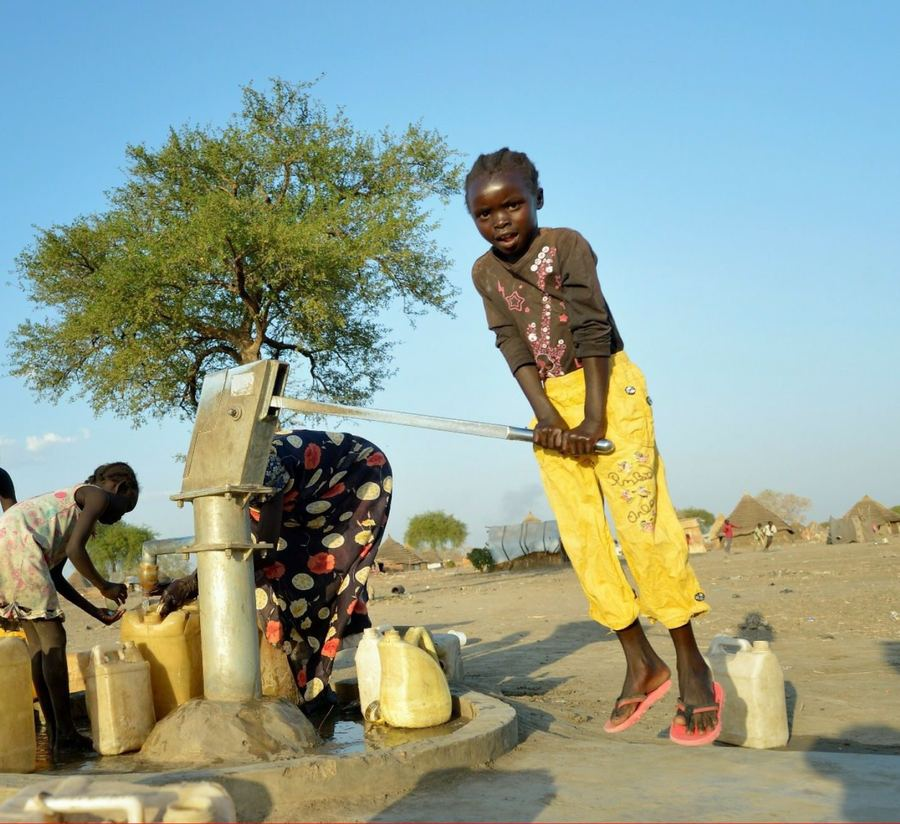
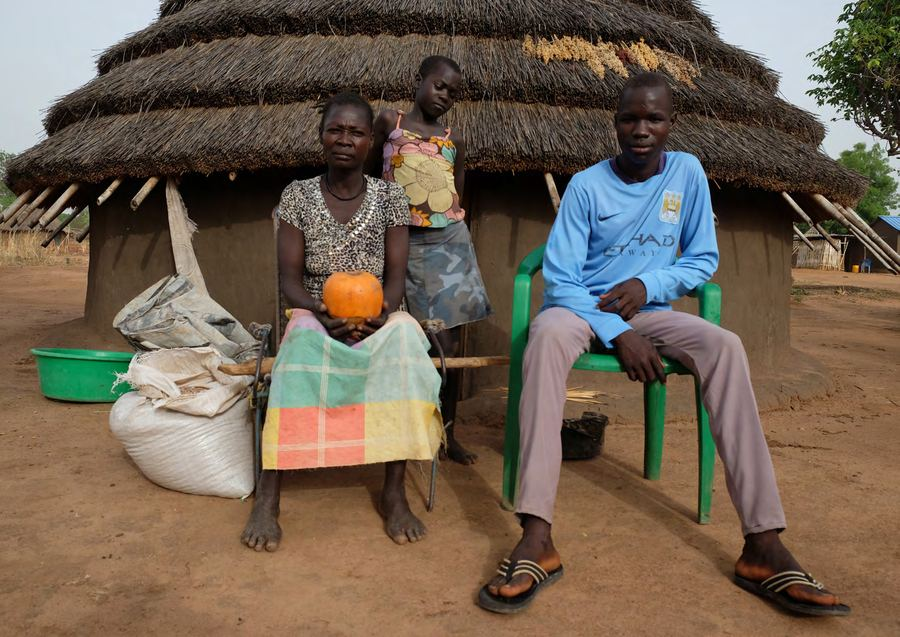
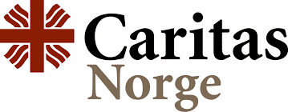

Déclaration de Dakar, version finale
Le texte final de la déclaration de Dakar, publié par Caritas Africa en français et en anglais.
Lire la déclaration, PDFRégion Afrique de la confédération Caritas Internationalis
Construire ensemble des communautés résilientes en Afrique
Caritas Africa est la pastorale sociale de l'Église catholique en Afrique. Depuis Lomé, elle coordonne et renforce 46 Caritas nationales au service des plus pauvres.




Photo : Caritas Africa, cadre stratégique 2024–2030
Caritas Africa anime, coordonne, représente et renforce les Caritas nationales du continent, pour que chacune serve au mieux les plus pauvres de son pays.
Inspirés par l'Évangile, nous travaillons dans un esprit de communion, de coopération fraternelle et de partenariat pour une Afrique meilleure.
 Répondre aux urgences humanitaires
Répondre efficacement aux urgences, aux côtés des Caritas nationales de chaque pays et avec l'ensemble de la confédération Caritas.
Photo : Caritas Africa, cadre stratégique 2024–2030
Répondre aux urgences humanitaires
Répondre efficacement aux urgences, aux côtés des Caritas nationales de chaque pays et avec l'ensemble de la confédération Caritas.
Photo : Caritas Africa, cadre stratégique 2024–2030
 Renforcer les Caritas nationales
Un accompagnement de proximité pour le renforcement organisationnel des membres du réseau.
Photo : rapport annuel 2021
Renforcer les Caritas nationales
Un accompagnement de proximité pour le renforcement organisationnel des membres du réseau.
Photo : rapport annuel 2021
 Servir et accompagner les plus pauvres
Promouvoir le développement humain intégral, avec une attention prioritaire aux plus démunis.
Photo : rapport annuel 2021
Servir et accompagner les plus pauvres
Promouvoir le développement humain intégral, avec une attention prioritaire aux plus démunis.
Photo : rapport annuel 2021
 Porter la voix des pauvres
Le plaidoyer auprès des institutions africaines et internationales, comme au sommet Union africaine – Union européenne.
Sommet de l'Union africaine, Malabo, mai 2022. Photo : rapport annuel 2022
Porter la voix des pauvres
Le plaidoyer auprès des institutions africaines et internationales, comme au sommet Union africaine – Union européenne.
Sommet de l'Union africaine, Malabo, mai 2022. Photo : rapport annuel 2022
« Témoigner de l'amour de Dieu »
À travers des œuvres de charité et de justice, en vue d'assurer le développement humain intégral, avec une attention prioritaire aux pauvres et aux plus démunis.
« La vie en plénitude pour tous »
Des communautés épanouies en Afrique, où l'amour, la réconciliation, la justice, la paix et la prospérité prévalent pour tous, et où la dignité de chaque femme, homme et enfant est promue.

Phase 3 du programme A2P-DIRO, 2019–2023 : un accompagnement de proximité personnalisé pour le renforcement organisationnel et le changement des Caritas en Afrique subsaharienne.
Six zones, qui portent le nom des conférences épiscopales régionales, organisent la coordination entre les membres. Chacune est coordonnée par une Caritas nationale.
Commission régionale 2023–2027. Président : Mgr Pierre CIBAMBO NTAKOBAJIRA. Vice-président : M. Santos GOTINE. Trésorier : M. Philippe Yaovi AHOUANYE. Coordinatrice régionale : Mme DABIRE / Lucy Esipila.
Gouvernance et équipeLe texte final de la déclaration de Dakar, publié par Caritas Africa en français et en anglais.
Lire la déclaration, PDF
Building together resilient communities in Africa
Le cadre stratégique oriente l'action de Caritas Africa et de ses 46 organisations membres pour les années 2024 à 2030.
Télécharger, PDF en anglais
Rejoignez Caritas Africa dans son engagement pour la justice et la charité envers les plus défavorisés, aux côtés des Caritas nationales de tout le continent.
Toute suspicion d'abus ou d'exploitation d'un enfant ou d'un adulte vulnérable impliquant le personnel ou les collaborateurs de Caritas doit être signalée. L'identité de la personne qui signale n'est divulguée qu'en cas de « besoin d'en connaître ».


